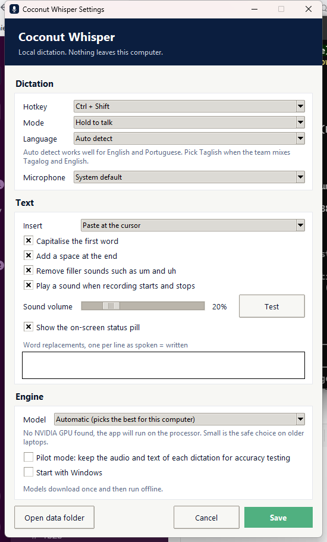

Pick the right file, then unzip it
Apple menu, About This Mac. If the chip line says Apple M1, M2, M3 or newer, take the Apple Silicon download. If it says Intel, take the Intel one. The wrong one simply will not open.
Unzip, then drag Coconut Whisper into your Applications folder.
Open it the first time with a right click
Right click the app and choose Open, then confirm in the box that appears. A normal double click gets refused the first time, because the app is not notarised with Apple.
If macOS still blocks it, go to System Settings, Privacy and Security, scroll down, and click Open Anyway.
xattr -dr com.apple.quarantine "/Applications/Coconut Whisper.app"Give it the two permissions it needs
Microphone, so it can hear you. macOS asks the first time you dictate, just say yes.
Accessibility, so it can notice the dictation key and paste the text for you. macOS does not always ask, so set it yourself: System Settings, Privacy and Security, Accessibility, then switch Coconut Whisper on.
Find the microphone icon in the menu bar
The app has no window and no dock icon. It lives at the top right of your screen, in the row with the clock, wifi and battery.
If your menu bar is crowded, the icon can be hidden behind the notch on some MacBooks. Holding Command and dragging menu bar icons rearranges them.
Click where you want to write, then hold the key
Click into the message box first, in Slack, Gmail, the ATS, anywhere. Then hold Right Command and talk.
This pill appears at the bottom of the screen while it hears you. Captured on Windows, it is the same pill on a Mac.
Let go when you finish. A second or two later the text appears where the cursor was.
The menu
Click the microphone icon in the menu bar.
Switching language takes effect immediately, no restart.
Settings, if you want to change the key
Open Settings from that menu. The keys you can choose from on a Mac:
Mode swaps holding the key for pressing once to start and once to stop, which is easier for long dictation.
Sound volume sets how loud the start and stop tones are. It starts quiet, and the Test button plays it at the level you picked.
Word replacements is for words it always gets wrong. One per line, written as spoken = written.

The settings window, captured on Windows. The Mac one has the same rows in the same order, drawn with Mac controls.